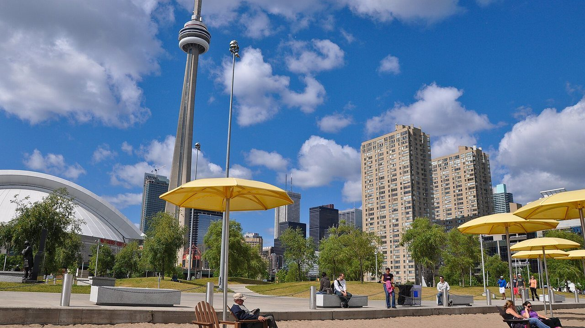

Race, Toronto Waterfront Trail

Behind
Best +0:01
371W
Target 418 W-47 W
- Cadence
- 87rpm
- Heart
- 140bpm
- Speed
- 26.5km/h
Recover9 of 15
1:42
Next: · 0:30 at level 24
+0.0%
4 m climbed
7.05 km
11
Resistance / 32
Solo races your best-time ghost: position reads Ahead or Behind, and solo alone gets a Pause button. Frozen at 16:18.